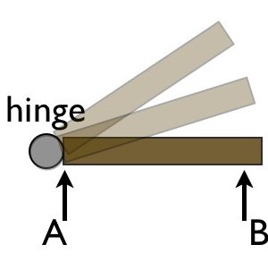
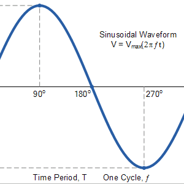
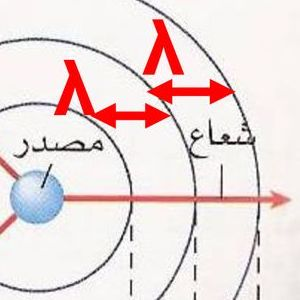
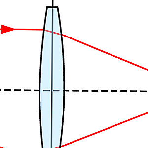
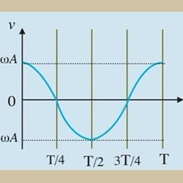
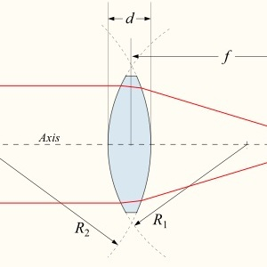
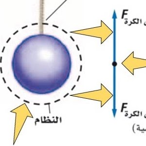
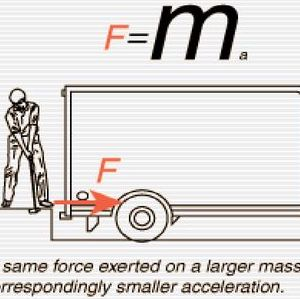

جميع التجارب الافتراضية لمنهج فيزياء ٢ مشروحة أدناه
gizmos virtual lab & crocodile physics تمت محاكاة التجارب الافتراضية عن طريق

العزم والقصور الذاتي
في هذه التجربة ستتعرف على المقصود بكل من العزم والقصور الذاتي لأجسام مختلفة
اقرأ المزيد →

التردد والزمن الدوري
في هذه التجربة ستتعرف على المقصود بكل من التردد والزمن الدوري لأجسام مختلفة
اقرأ المزيد →


حالات تكون الصورة خلال العدسة المحدبة
في هذه التجربة ستتعرف على كيفيج تكوين الصورة من خلال العدسة المحدبة
اقرأ المزيد →

التمثيل البياني للحركة التوافقية البسيطة
في هذه التجربة ستدرس المنحنيات التي تصف إزاحة وسرعة حركة وتسارع كرة بندول تتحرك حركة توافقية بسيطة
اقرأ المزيد →

تعيين البعد البؤري للعدسة المحدبة
في هذه التجربة ستدرس إحدى الطرق التي تستخدم لتعيين البعد البؤري لعدسة محدبة
اقرأ المزيد →

تحولات الطاقة الميكانيكية لكرة ساقطة
في هذه التجربة ستدرس إحدى صور تحول الطاقة الميكانيكية من كامنة إلى حركية والعكس
اقرأ المزيد →

العلاقة بين القوة وكل من الكتلة والتسارع
في هذه التجربة سوف تدرس العلاقة بين كل من (القوة والكتلة والتسارع) لعربة متحركة
اقرأ المزيد →